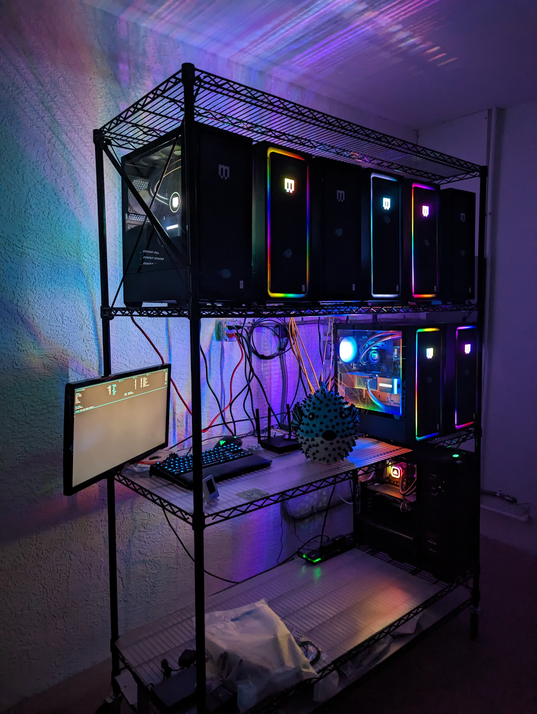

The Puffer Stack
Thank you for 325 stars on PufferLib! As promised, this is a complete teardown of our stack including hardware, containerization, dependency management, and more.

Hardware
We have 8 Maingear desktops (we call them puffer boxes) with one 24GB RTX 4090 each. The CPUs each have 24 cores. One has an i9 13900k. Five have i9 14900k’s. Two have i9 14900ks’s. Each machine has 128 GB DDR4 RAM. There is also a login/testing machine with a Titan V, 32GB of RAM, and an 8-core i7 9700k. The main machines retail around $4000 each. The 4090s are overkill for most jobs, but we wanted to have the option to scale up models and experiment with new architectures.
All machines are connected to gigabit ethernet. Power is supplied with a standard 20-amp outlet per 2 machines. Machines sit on a utility rack that is grated to allow air intake from below. Exhaust is backwards, towards the wall, which has about 2 feet of free space. A small industrial fan is angled so as to push hot air away from the back wall. The room is maintained at 80F.
Issues & Gotchas: We have had some stability issues that I am 95% certain are caused by faulty 14th gen intel chips. The motherboards are running Intel’s suggested power settings, but a couple of the machines still get occasional crashes. Unrelatedly, the chip architecture is 8 p-cores and 16 e-cores. To get good performance out of these chips, asynchronous environment sampling is a must. We also discovered that these machines would not boot properly from a hard reset when not connected to a monitor. We bought some dummy HDMI plugs to trick the machines into booting headless.
Installation & Containerization
Machines are installed with a minimal build of Debian 12. The PufferTank repository on Github contains our setup script. For now, this is done manually on each machine. It installs NVIDIA drivers, utilities like git and vim, docker, and Tailscale. We rely on Tailscale for credentialing users and general administration. There is no Slurm, shared file system, or other such layers. Users are assigned one or multiple machines to use for development and experiments.
Each machine contains a build of PufferTank. Images for PufferTank are available from pufferai on docker hub or through the PufferTank github repository. PufferTank is a 3-stage docker build. There is a base layer that installs (currently) Pytorch 3.4 and Python 3.11, as well as basic utilities. A second layer installs dependencies for tricky RL environments like Nethack and DM Lab. The final layer is a quick build that clones PufferLib, sets a few environment flags, adds a bit of configuration to bash, and also installs Neovim. The idea is that the first layer doesn’t change often, the second layer changes whenever we add new envs, and the third layer is rebuilt quite often.
Puffer hardware users are booted into PufferTank on login. They can also spin up their own container in seconds, in cases where a fresh install is needed or a machine is being shared.
PufferLib dependency management
PufferLib provides a pip package with a long list of optionals, one per environment. There is a common extra that will install all of the environments (or at least the ones that play nice together). This is the default in PufferTank. We set sane default versions of Gym/Gymnasium/PettingZoo for maximum compatibility. Some extras outside of common may override these. PufferLib provides short bindings for each environment, but no registry. We wrap environments in PufferLib’s emulation layer for compatibility, which is a 1-line change. For Gym environments, we apply a Gymnasium compatibility layer. For old PettingZoo environments still based on the Gym API, we apply a similar compatibility layer. For most environments, we apply an episode postprocessing wrapper that cuts down on data transfer during multiprocessing. Some environments have additional wrappers to make them render nicely or fix various quirks. But in general, we keep the stack as thin and as simple as possible. We considered folding the postprocessing wrapper into the vectorization module for this purpose, but enough envs return nonstandard data that this is not worth doing at the present.
Summary
This is a very simple cluster, but we get a lot of mileage out of it. Most folks don’t realize how fast high-end desktop processors are compared to 10x more expensive server CPUs. One puffer box was 3x faster than the CPU in an 8x A100 server we previously had access to. With discounts, an 8x A100 box is still going to be $100k+. Our entire setup is around $35k. This was a lot of money for me to spend, but it is currently powering 4 different RL projects. And with the prices outside something like Vast, the buy price is only 2-4 months of rental pricing.
One of the worst things you can do is to adopt heavy tools and then use them wrong. No shared file system, Slurm, etc. means less stuff to manage and less stuff in onboarding. We can get new users onto a machine with their own dev environment that exactly matches their local one in 5 minutes.